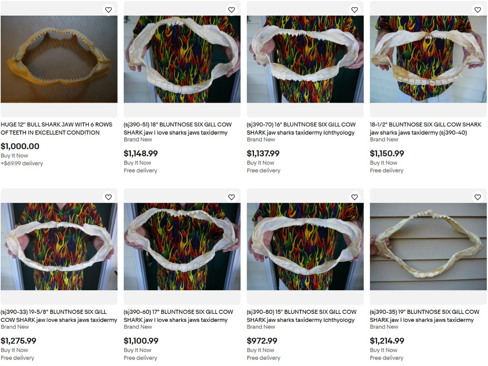
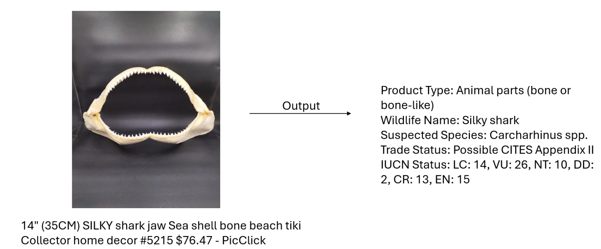
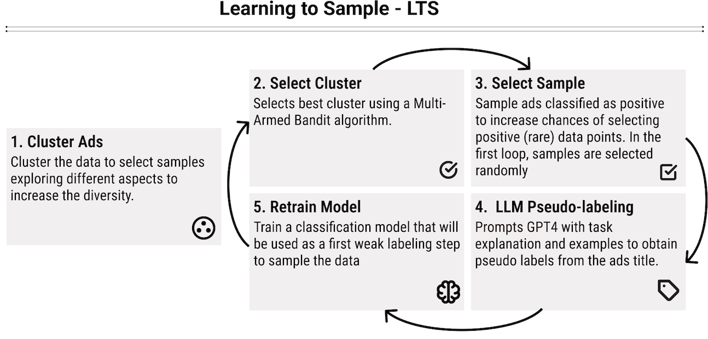
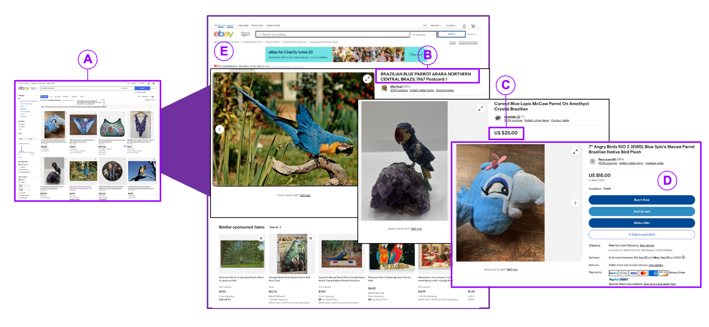
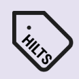

Publications

Prevalence of endangered shark trophies in automated detection of the online wildlife trade
Biological Conservation (2025)

Descriptive Analysis of Online Wildlife Products Using Vision Language Models
Proceedings of the 8th ACM SIGCAS/SIGCHI Conference on Computing and Sustainable Societies (Accepted, 2025)



HILTS: Human-LLM Collaboration for Effective Data Labeling
Submitted to Information Systems Journal (2025)